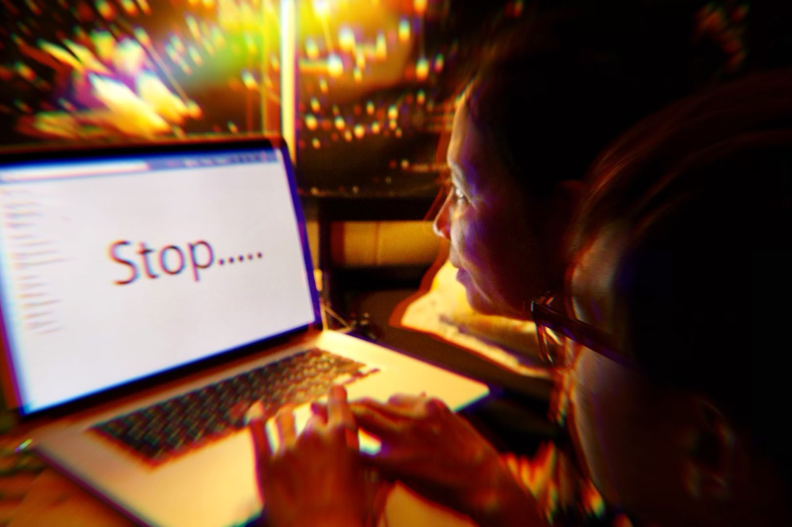
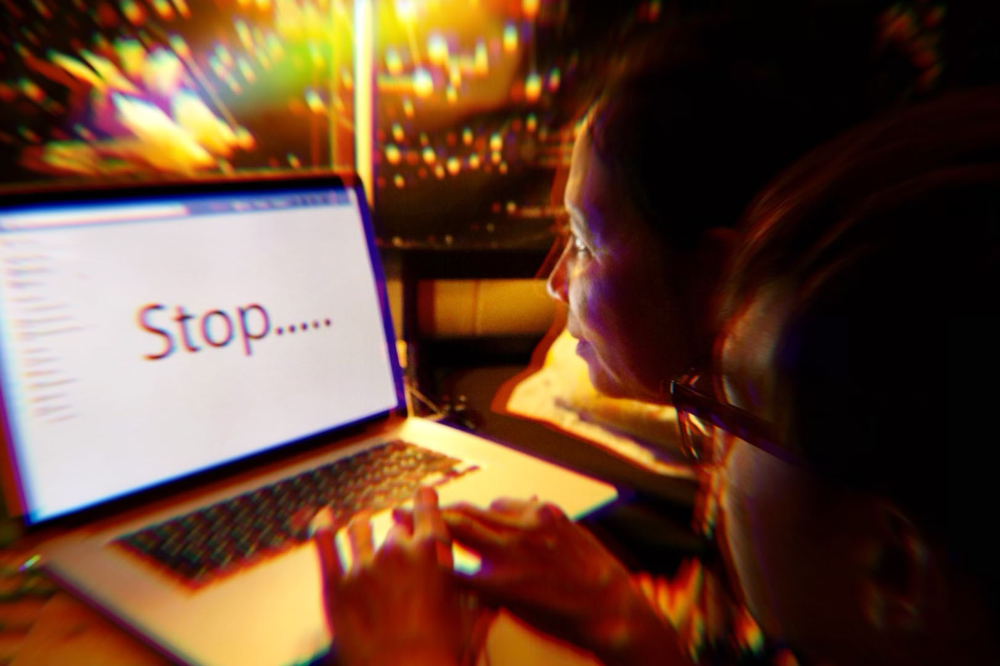

Technology Culture


 

{kind=link}
Becoming an artist has been always my ultimate wish. Therefore, learning how to combine many different types of arts together such as photography and digital media art is one of my dreams. I use photography to complete my dream as well as help myself to escape from the real world. My photographs are taken with a Canon T6 and generally shot with a 50mm lens. The ideas for my photographs come from the inspiration I get from my surroundings. Decisions on how and what to photograph are made based on what surrounds me at that moment, and then a model may be inserted into the frame. The goal of my photographs is to capture the beauty of an object or person that may otherwise be overlooked. Digital media art is really new to me, but I feel so lucky that I have taken the class at San Jose State University to discover what this type of art is about. My challenge for this class or this type of art is about technical part because it requires to use many different programs and websites that I have ever known before, such as GitHub, Processing and Dreamweaver. Throughout the whole course, I always think about how to combine photography and Digital Media Art and still keep the nature of each of them. Finally, after discussing with my professor, I get a clearer idea of what Digital Media Art is about. The definition of it is actually really wide and what I love the most about it is that I can use the media technology to bring up the concern about the culture of using digital media art.